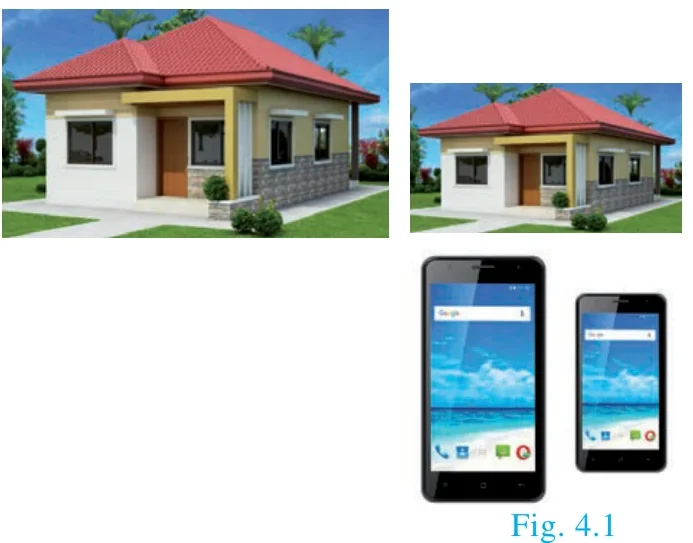
Two figures are said to be similar if every aspect of one figure is proportional to other figure. For example:
The above houses look the same but different in size. Both the mobile phones are the same but they vary in their sizes. Therefore, mathematically we say that two objects are similar if they are of same shape but not necessarily they need to have the same size. The ratio of the corresponding measurements of two similar objects must be proportional.
Here is a box of geometrical shapes. Collect the similar objects and list out.
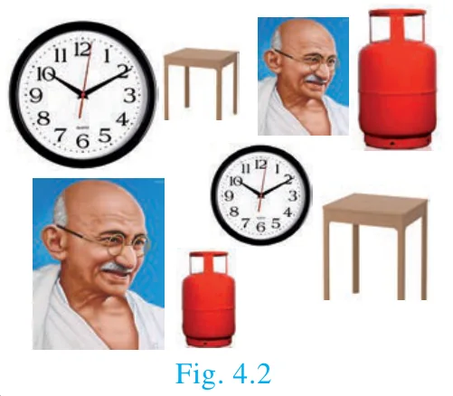
In this chapter, we will be discussing specifically the use of similar triangles which is of utmost importance where if it is beyond our reach to physically measure the distance and height with simple measuring instruments. The concept of similarity is widely used in the fields of engineering, architecture and construction.
Here are few applications of similarity
- By analyzing the shadows that make triangles, we can determine the actual height of the objects.
- Used in aerial photography to determine the distance from sky to a particular location on the ground.
- Used in Architecture to aid in design of their work.
4.2.1 Similar triangles
In class IX, we have studied congruent triangles. We can say that two geometrical figures are congruent, if they have same size and shape. But, here we shall study about geometrical figures which have same shape but proportional sizes. These figures are called “similar”.
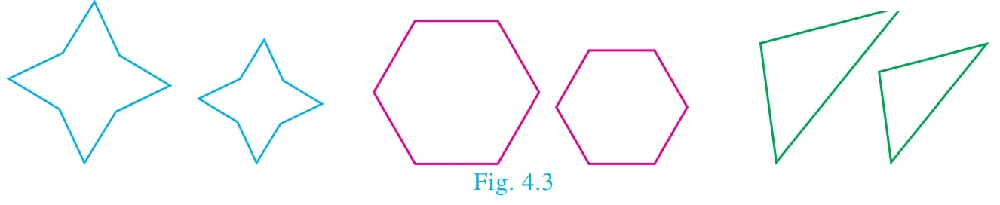
Congruency and similarity of triangles
Congruency is a particular case of similarity. In both the cases, three angles of one triangle are equal to the three corresponding angles of the other triangle. But in congruent triangles, the corresponding sides are equal. While in similar triangles, the corresponding sides are proportional.
Note
The triangles \(ABC\) and \(PQR\) are similar can be written as \(\Delta ABC \sim \Delta PQR\)
| Congruent triangles | Similar triangles |
|---|---|
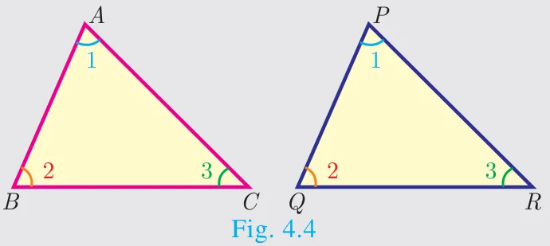 | 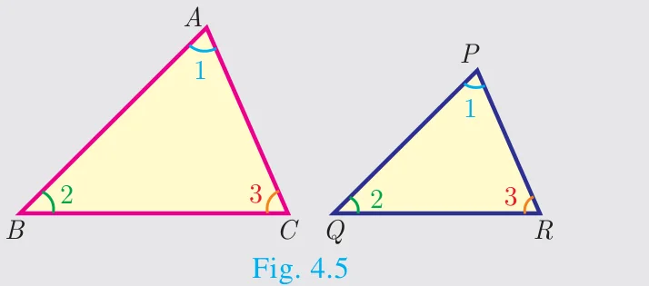 |
| \(\Delta ABC \cong \Delta PQR\) | \(\Delta ABC \sim \Delta PQR\) |
| \(\angle A = \angle P,\ \angle B = \angle Q,\ \angle C = \angle R\) | \(\angle A = \angle P,\ \angle B = \angle Q,\ \angle C = \angle R\) |
| \(AB = PQ,\ BC = QR,\ CA = RP\) | \(AB \neq PQ,\ BC \neq QR,\ CA \neq RP\) |
| \(\dfrac{AB}{PQ} = \dfrac{BC}{QR} = \dfrac{CA}{RP} = 1\) | but \(\dfrac{AB}{PQ} = \dfrac{BC}{QR} = \dfrac{CA}{RP} > 1 \text{ or } < 1\) |
| Same shape and same size. | Same shape but not same size. |
Thinking Corner
- Are square and a rhombus similar or congruent. Discuss.
- Are a rectangle and a parallelogram similar. Discuss.
4.2.2 Criteria of Similarity
The following criteria are sufficient to prove that two triangles are similar.
AA Criterion of similarity
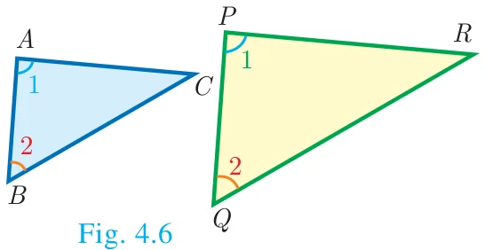
If two angles of one triangle are respectively equal to two angles of another triangle, then the two triangles are similar, because the third angle in both triangles must be equal. Therefore, AA similarity criterion is same as the AAA similarity criterion.
So if \(\angle A = \angle P = 1\) and \(\angle B = \angle Q = 2\) then \(\Delta ABC \sim \Delta PQR\).
SAS Criterion of similarity
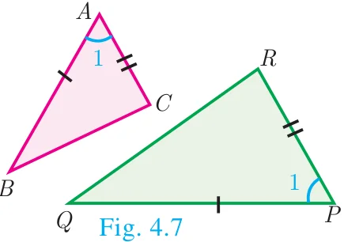
If one angle of a triangle is equal to one angle of another triangle and if the sides including them are proportional then the two triangles are similar.
Thus if \(\angle A = \angle P = 1\) and \(\dfrac{AB}{PQ} = \dfrac{AC}{PR}\) then \(\Delta ABC \sim \Delta PQR\)
SSS Criterion of similarity
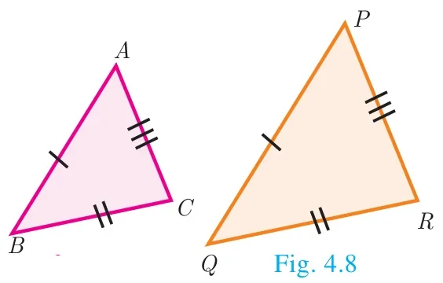
If three sides of a triangle are proportional to the three corresponding sides of another triangle, then the two triangles are similar.
So if, \(\dfrac{AB}{PQ} = \dfrac{AC}{PR} = \dfrac{BC}{QR}\) then \(\Delta ABC \sim \Delta PQR\)
Thinking Corner
Are any two right angled triangles similar? If so why?
Some useful results on similar triangles
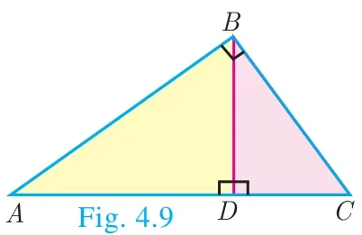
A perpendicular line drawn from the vertex of a right angled triangle divides the triangle into two triangles similar to each other and also to original triangle.
\(\Delta ADB \sim \Delta BDC,\ \Delta ABC \sim \Delta ADB,\ \Delta ABC \sim \Delta BDC\)
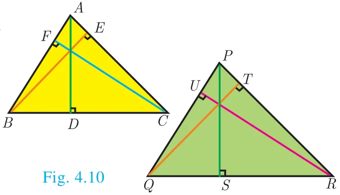
If two triangles are similar, then the ratio of the corresponding sides are equal to the ratio of their corresponding altitudes.
i.e. if \(\Delta ABC \sim \Delta PQR\) then
\(\dfrac{AB}{PQ} = \dfrac{BC}{QR} = \dfrac{CA}{RP} = \dfrac{AD}{PS} = \dfrac{BE}{QT} = \dfrac{CF}{RU}\)
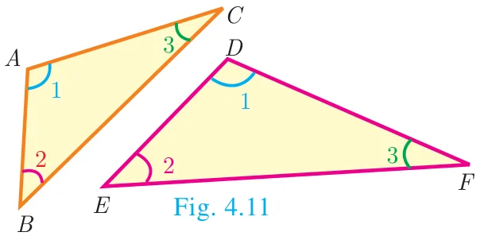
If two triangles are similar, then the ratio of the corresponding sides are equal to the ratio of the corresponding perimeters.
\(\Delta ABC \sim \Delta DEF\) then
\(\dfrac{AB}{DE} = \dfrac{BC}{EF} = \dfrac{CA}{FD} = \dfrac{AB + BC + CA}{DE + EF + FD}\)
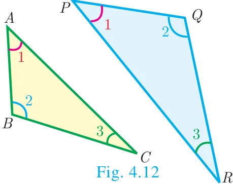
The ratio of the area of two similar triangles are equal to the ratio of the squares of their corresponding sides.
\(\dfrac{\text{area}(\Delta ABC)}{\text{area}(\Delta PQR)} = \dfrac{AB^2}{PQ^2} = \dfrac{BC^2}{QR^2} = \dfrac{AC^2}{PR^2}\)
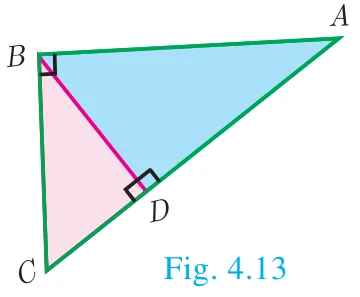
If two triangles have common vertex and their bases are on the same straight line, the ratio between their areas is equal to the ratio between the length of their bases.
Here, \(\dfrac{\text{area}(\Delta ABD)}{\text{area}(\Delta BDC)} = \dfrac{AD}{DC}\).
Definition 1
Two triangles are said to be similar if their corresponding sides are proportional.
Definition 2
The triangles are equiangular if the corresponding angles are equal.
Illustration Two triangles, \(\Delta XYZ\) and \(\Delta LMN\) are similar because the corresponding angles are equal.
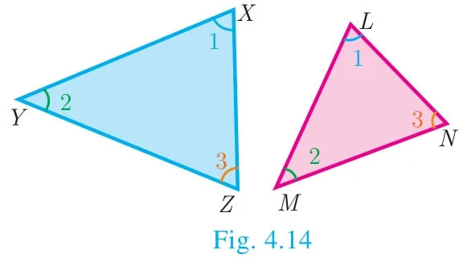
Note
- A pair of equiangular triangles are similar.
- If two triangles are similar, then they are equiangular.
(i) \(\angle X = \angle L,\ \angle Y = \angle M,\ \angle Z = \angle N\) (by angles) (ii) \(\dfrac{XY}{LM} = \dfrac{YZ}{MN} = \dfrac{XZ}{LN}\) (by sides)
Here the vertices \(X,\ Y,\ Z\) correspond to the vertices \(L,\ M,\ N\) respectively. Thus in symbol \(\Delta XYZ \sim \Delta LMN\)
Example 4.1
Show that \(\Delta PST \sim \Delta PQR\)
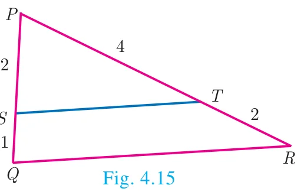
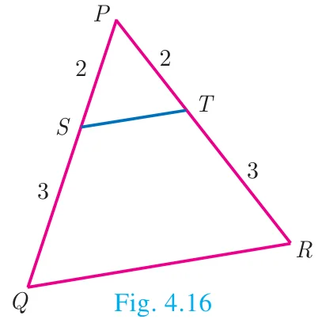
Solution
(i) In \(\Delta PST\) and \(\Delta PQR\),
\(\dfrac{PS}{PQ} = \dfrac{2}{2+1} = \dfrac{2}{3},\quad \dfrac{PT}{PR} = \dfrac{4}{4+2} = \dfrac{2}{3}\)
Thus, \(\dfrac{PS}{PQ} = \dfrac{PT}{PR}\) and \(\angle P\) is common
Therefore, by \(SAS\) similarity, \(\Delta PST \sim \Delta PQR\)
(ii) In \(\Delta PST\) and \(\Delta PQR\),
\(\dfrac{PS}{PQ} = \dfrac{2}{2+3} = \dfrac{2}{5},\quad \dfrac{PT}{PR} = \dfrac{2}{2+3} = \dfrac{2}{5}\)
Thus, \(\dfrac{PS}{PQ} = \dfrac{PT}{PR}\) and \(\angle P\) is common
Therefore, by SAS similarity, \(\Delta PST \sim \Delta PQR\)
Example 4.2
Is \(\Delta ABC \sim \Delta PQR\)?
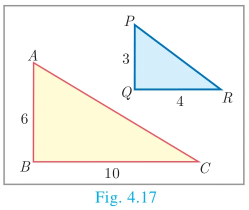
Solution
In \(\Delta ABC\) and \(\Delta PQR\),
\(\dfrac{PQ}{AB} = \dfrac{3}{6} = \dfrac{1}{2};\quad \dfrac{QR}{BC} = \dfrac{4}{10} = \dfrac{2}{5}\)
since \(\dfrac{1}{2} \neq \dfrac{2}{5},\quad \dfrac{PQ}{AB} \neq \dfrac{QR}{BC}\).
The corresponding sides are not proportional.
Therefore \(\Delta ABC\) is not similar to \(\Delta PQR\).
Note
If we change exactly one of the four given lengths, then we can make these triangles similar.
Example 4.3
Observe Fig.4.18 and find \(\angle P\).
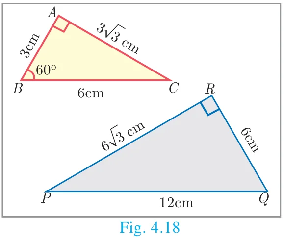
Solution
In \(\Delta BAC\) and \(\Delta PRQ\), \(\dfrac{AB}{RQ} = \dfrac{3}{6} = \dfrac{1}{2}\);
\(\dfrac{BC}{QP} = \dfrac{6}{12} = \dfrac{1}{2};\quad \dfrac{CA}{PR} = \dfrac{3\sqrt{3}}{6\sqrt{3}} = \dfrac{1}{2}\)
Therefore, \(\dfrac{AB}{RQ} = \dfrac{BC}{QP} = \dfrac{CA}{PR}\)
By \(SSS\) similarity, we have \(\Delta BAC \sim \Delta QRP\)
\(\angle P = \angle C\) (since the corresponding parts of similar triangle)
\(\angle P = \angle C = 180^\circ - (\angle A + \angle B) = 180^\circ - (90^\circ + 60^\circ)\)
\(\angle P = 180^\circ - 150^\circ = 30^\circ\)
Example 4.4
A boy of height 90cm is walking away from the base of a lamp post at a speed of 1.2m/sec. If the lamppost is 3.6m above the ground, find the length of his shadow cast after 4 seconds.
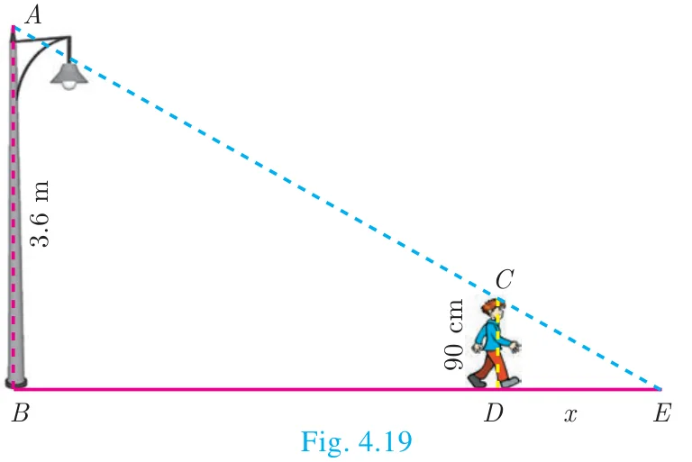
Solution
Given, speed \(= 1.2\) m/s,
time \(= 4\) seconds
distance \(=\) speed \(\times\) time
\(= 1.2 \times 4 = 4.8\) m
Let \(x\) be the length of the shadow after 4 seconds
Since, \(\Delta ABE \sim \Delta CDE\), \(\dfrac{BE}{DE} = \dfrac{AB}{CD}\) gives \(\dfrac{4.8 + x}{x} = \dfrac{3.6}{0.9} = 4\) (since 90 cm \(= 0.9\) m)
\(4.8 + x = 4x\) gives \(3x = 4.8\) so, \(x = 1.6\) m
The length of his shadow \(DE = 1.6\) m
Example 4.5
In Fig.4.20 \(\angle A = \angle CED\) prove that \(\Delta CAB \sim \Delta CED\). Also find the value of \(x\).
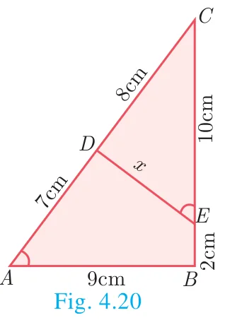
Solution
In \(\Delta CAB\) and \(\Delta CED\), \(\angle C\) is common, \(\angle A = \angle CED\)
Therefore, \(\Delta CAB \sim \Delta CED\) (By \(AA\) similarity)
Hence, \(\dfrac{CA}{CE} = \dfrac{AB}{DE} = \dfrac{CB}{CD}\)
\(\dfrac{AB}{DE} = \dfrac{CB}{CD}\) gives \(\dfrac{9}{x} = \dfrac{10+2}{8}\) so, \(x = \dfrac{8 \times 9}{12} = 6\) cm.
Example 4.6
In Fig.4.21, \(QA\) and \(PB\) are perpendiculars to \(AB\). If \(AO = 10\) cm, \(BO = 6\) cm and \(PB = 9\) cm. Find \(AQ\).
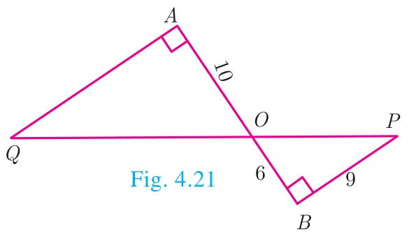
Solution
In \(\Delta AOQ\) and \(\Delta BOP\), \(\angle OAQ = \angle OBP = 90^\circ\)
\(\angle AOQ = \angle BOP\) (Vertically opposite angles)
Therefore, by \(AA\) Criterion of similarity, \(\Delta AOQ \sim \Delta BOP\)
\(\dfrac{AO}{BO} = \dfrac{OQ}{OP} = \dfrac{AQ}{BP}\)
\(\dfrac{10}{6} = \dfrac{AQ}{9} \Rightarrow AQ = \dfrac{10 \times 9}{6} = 15\) cm
Example 4.7
The perimeters of two similar triangles \(ABC\) and \(PQR\) are respectively 36 cm and 24 cm. If \(PQ = 10\) cm, find \(AB\).
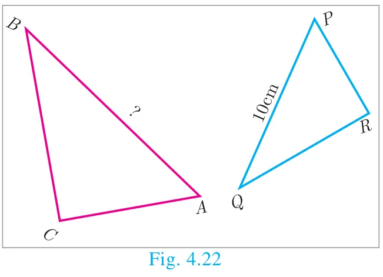
Solution
The ratio of the corresponding sides of similar triangles is same as the ratio of their perimeters.
Since \(\Delta ABC \sim \Delta PQR\),
\(\dfrac{AB}{PQ} = \dfrac{BC}{QR} = \dfrac{AC}{PR} = \dfrac{36}{24}\)
\(\dfrac{AB}{PQ} = \dfrac{36}{24} \Rightarrow \dfrac{AB}{10} = \dfrac{36}{24}\)
\(AB = \dfrac{36 \times 10}{24} = 15\) cm
Example 4.8
If \(\Delta ABC\) is similar to \(\Delta DEF\) such that \(BC = 3\) cm, \(EF = 4\) cm and area of \(\Delta ABC = 54\text{ cm}^2\). Find the area of \(\Delta DEF\).
Solution
Since the ratio of area of two similar triangles is equal to the ratio of the squares of any two corresponding sides, we have
\(\dfrac{\text{Area}(\Delta ABC)}{\text{Area}(\Delta DEF)} = \dfrac{BC^2}{EF^2} \Rightarrow \dfrac{54}{\text{Area}(\Delta DEF)} = \dfrac{3^2}{4^2}\)
\(\text{Area}(\Delta DEF) = \dfrac{16 \times 54}{9} = 96\text{ cm}^2\)
Example 4.9
Two poles of height ‘\(a\)’ metres and ‘\(b\)’ metres are ‘\(p\)’ metres apart. Prove that the height of the point of intersection of the lines joining the top of each pole to the foot of the opposite pole is given by \(\dfrac{ab}{a+b}\) metres.
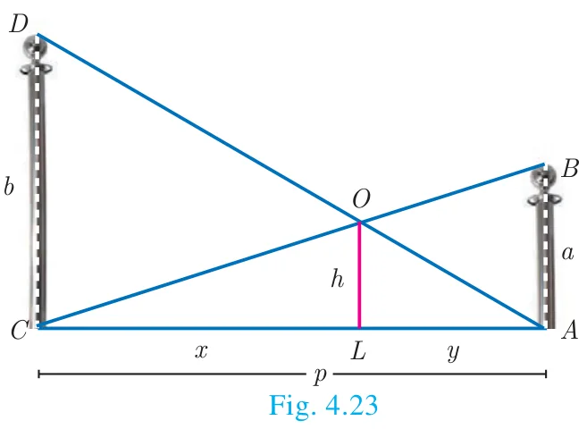
Solution
Let \(AB\) and \(CD\) be two poles of height ‘\(a\)’ metres and ‘\(b\)’ metres respectively such that the poles are ‘\(p\)’ metres apart. That is \(AC = p\) metres. Suppose the lines \(AD\) and \(BC\) meet at \(O\), such that \(OL = h\) metres
Let \(CL = x\) and \(LA = y\).
Then, \(x + y = p\)
In \(\Delta ABC\) and \(\Delta LOC\), we have
\(\angle CAB = \angle CLO\) [each equal to \(90^\circ\)]
\(\angle C = \angle C\) [\(C\) is common]
\(\Delta CAB \sim \Delta CLO\) [By \(AA\) similarity]
\(\dfrac{CA}{CL} = \dfrac{AB}{LO} \Rightarrow \dfrac{p}{x} = \dfrac{a}{h}\)
so, \(x = \dfrac{ph}{a}\) ...(1)
In \(\Delta ALO\) and \(\Delta ACD\), we have
\(\angle ALO = \angle ACD\) [each equal to \(90^\circ\)]
\(\angle A = \angle A\) [\(A\) is common]
\(\Delta ALO \sim \Delta ACD\) [by AA similarity]
\(\dfrac{AL}{AC} = \dfrac{OL}{DC} \Rightarrow \dfrac{y}{p} = \dfrac{h}{b}\) we get, \(y = \dfrac{ph}{b}\) ...(2)
(1)+(2) \(\Rightarrow\) \(x + y = \dfrac{ph}{a} + \dfrac{ph}{b}\)
\(p = ph\left(\dfrac{1}{a} + \dfrac{1}{b}\right)\) (Since \(x + y = p\))
\(1 = h\left(\dfrac{a+b}{ab}\right)\)
Therefore, \(h = \dfrac{ab}{a+b}\)
Hence, the height of the intersection of the lines joining the top of each pole to the foot of the opposite pole is \(\dfrac{ab}{a+b}\) metres.
Progress Check
- All circles are \(\underline{\qquad}\) (congruent/similar).
- All squares are \(\underline{\qquad}\) (similar/congruent).
- Two triangles are similar, if their corresponding angles are \(\underline{\qquad}\) and their corresponding sides are \(\underline{\qquad}\).
- (a) All similar triangles are congruent – True/False
(b) All congruent triangles are similar – True/False. - Give two different examples of pair of non-similar figures?
Activity 1
Let us try to construct a line segment of length \(\sqrt{2}\).
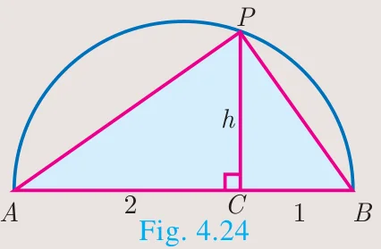
For this, we consider the following steps.
Step1: Take a line segment of length 3 units. Call it as AB.
Step2: Take a point \(C\) on \(AB\) such that \(AC = 2\), \(CB = 1\).
Step3: Draw a semi-circle with AB as diameter as shown in the diagram
Step4: Take a point ‘\(P\)’ on the semi-circle such that \(CP\) is perpendicular to \(AB\).
Step5: Join \(P\) to \(A\) and \(B\). We will get two right triangles \(ACP\) and \(BCP\).
Step6: Verify that the triangles \(ACP\) and \(BCP\) are similar.
Step7: Let \(CP = h\) be the common altitude. Using similarity, find \(h\).
Step8: What do you get upon finding \(h\)?
Repeating the same process, can you construct a line segment of lengths \(\sqrt{3},\ \sqrt{5},\ \sqrt{8}\).
4.2.3 Construction of similar triangles
So far we have discussed the theoretical approach of similar triangles and their properties. Now we shall discuss the geometrical construction of a triangle similar to a given triangle whose sides are in a given ratio with the corresponding sides of the given triangle.
This construction includes two different cases. In one, the triangle to be constructed is smaller and in the other it is larger than the given triangle. So, we use the following term called “scale factor” which measures the ratio of the sides of the triangle to be constructed with the corresponding sides of the given triangle. Let us take the following examples involving the two cases:
Example 4.10
Construct a triangle similar to a given triangle \(PQR\) with its sides equal to \(\dfrac{3}{5}\) of the corresponding sides of the triangle \(PQR\) (scale factor \(\dfrac{3}{5} < 1\))
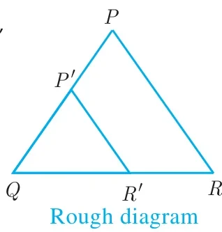
Solution
Given a triangle \(PQR\) we are required to construct another triangle whose sides are \(\dfrac{3}{5}\) of the corresponding sides of the triangle \(PQR\).
Steps of construction
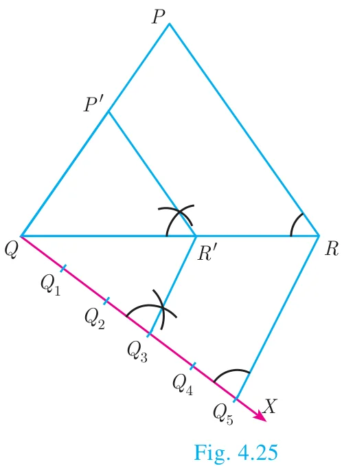
- Construct a \(\Delta PQR\) with any measurement.
- Draw a ray \(QX\) making an acute angle with \(QR\) on the side opposite to vertex \(P\).
- Locate 5 (the greater of 3 and 5 in \(\frac{3}{5}\)) points. \(Q_1, Q_2, Q_3, Q_4\) and \(Q_5\) on \(QX\) so that \(QQ_1 = Q_1Q_2 = Q_2Q_3 = Q_3Q_4 = Q_4Q_5\)
- Join \(Q_5R\) and draw a line through \(Q_3\) (the third point, 3 being smaller of 3 and 5 in \(\frac{3}{5}\)) parallel to \(Q_5R\) to intersect QR at \(R'\).
- Draw line through \(R'\) parallel to the line \(RP\) to intersect QP at \(P'\).
Then, \(\Delta P'QR'\) is the required triangle each of whose sides is three-fifths of the corresponding sides of \(\Delta PQR\).
Example 4.11
Construct a triangle similar to a given triangle \(PQR\) with its sides equal to \(\dfrac{7}{4}\) of the corresponding sides of the triangle \(PQR\) (scale factor \(\dfrac{7}{4} > 1\))
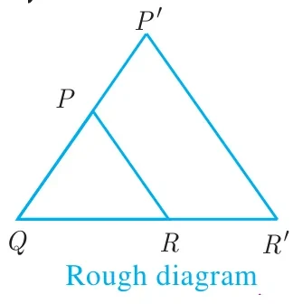
Solution
Given a triangle \(PQR\), we are required to construct another triangle whose sides are \(\dfrac{7}{4}\) of the corresponding sides of the triangle \(PQR\).
Steps of construction
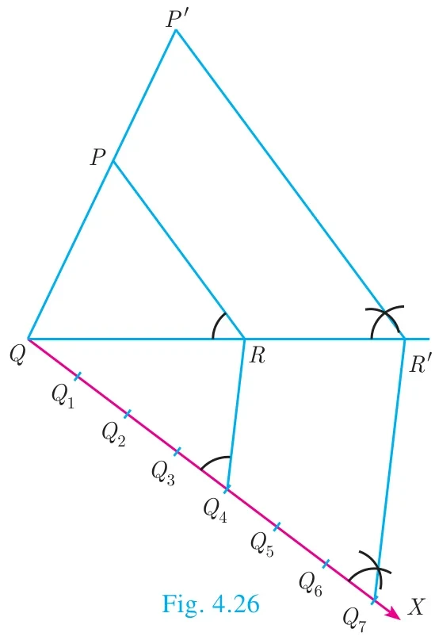
- Construct a \(\Delta PQR\) with any measurement.
- Draw a ray \(QX\) making an acute angle with \(QR\) on the side opposite to vertex \(P\).
- Locate 7 points (the greater of 7 and 4 in \(\frac{7}{4}\)) \(Q_1, Q_2, Q_3, Q_4, Q_5, Q_6\) and \(Q_7\) on \(QX\) so that \(QQ_1 = Q_1Q_2 = Q_2Q_3 = Q_3Q_4 = Q_4Q_5 = Q_5Q_6 = Q_6Q_7\)
- Join \(Q_4\) (the 4th point, 4 being smaller of 4 and 7 in \(\frac{7}{4}\)) to \(R\) and draw a line through \(Q_7\) parallel to \(Q_4R\), intersecting the extended line segment \(QR\) at \(R'\).
- Draw a line through \(R'\) parallel to \(RP\) intersecting the extended line segment \(QP\) at \(P'\)
Then \(\Delta P'QR'\) is the required triangle each of whose sides is seven-fourths of the corresponding sides of \(\Delta PQR\).